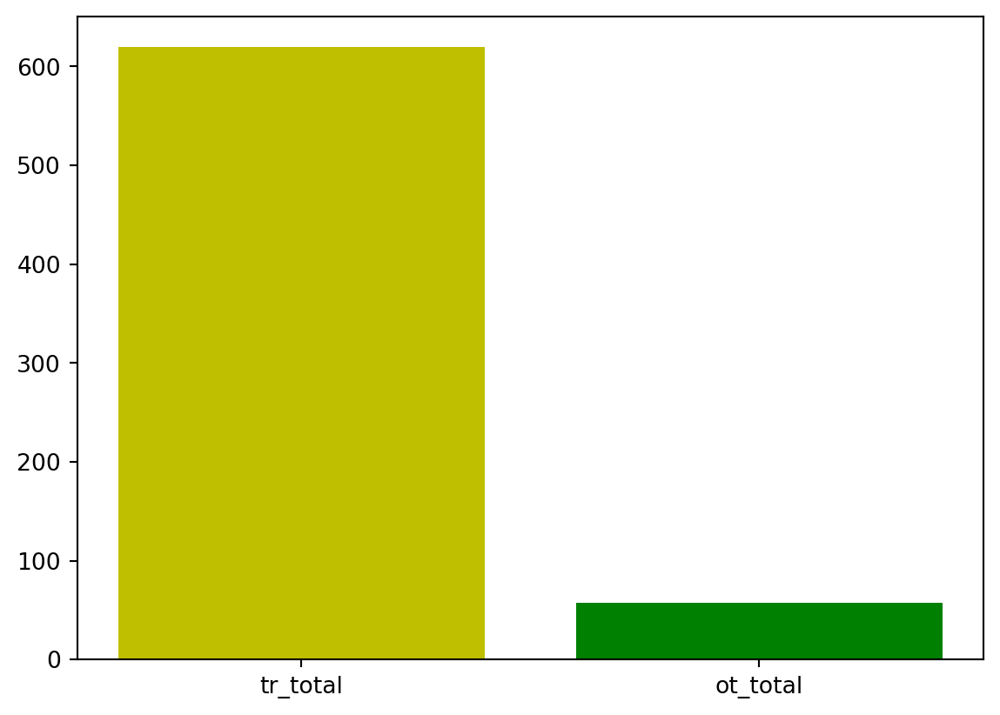

import pandas as pd
import numpy as np
import matplotlib.pyplot as plt웰컴투 코리아 조의 데이터 분석
출처: 문화체육관광부,「국민여행조사」, 2022, 2024.07.19, 국내여행 지출액 URL: https://kosis.kr/statHtml/statHtml.do?orgId=113&tblId=DT_113_STBL_1029295&conn_path=I2
분석 주제: “1인 평균 국내여행 지출액 비교: COVID-19 기간을 구분으로”
[조사기간 및 조사대상 규모] 1) 2018년: 48,000명 2) 2019년: 50,400명 3) 2020년: 50,400명 4) 2021년: 51,600명 5) 2022년: 51,600명
1. 2022년 데이터 불러오기
- 원본 데이터(excel)상, 1행과 2행 일부가 병합되어 있음.
- 원본 데이터의 2행부터 불러오고자 header = 1로 설정하였음.
df_22 = pd.read_excel('data/domestic_2022.xlsx', header = 1)
df_22.head()| 통계분류(1) | 통계분류(2) | 국내전체 | 국내숙박 | 국내당일 | 관광전체 | 관광숙박 | 관광당일 | 기타전체 | 기타숙박 | 기타당일 | |
|---|---|---|---|---|---|---|---|---|---|---|---|
| 0 | 전체 | 소계 | 34533 | 24094 | 10440 | 31601 | 22528 | 9073 | 2932 | 1566 | 1367 |
| 1 | 성별 | 남자 | 16664 | 11420 | 5244 | 15062 | 10565 | 4497 | 1603 | 855 | 747 |
| 2 | NaN | 여자 | 17869 | 12673 | 5195 | 16539 | 11963 | 4576 | 1330 | 710 | 619 |
| 3 | 연령 | 15~19세 | 873 | 588 | 286 | 810 | 557 | 253 | 63 | 30 | 32 |
| 4 | NaN | 20대 | 6564 | 4637 | 1927 | 6277 | 4469 | 1808 | 287 | 168 | 119 |
2. 변수 이름 바꿔보기
- 데이터 변수 확인
df_22.columns
df_22 = df_22.rename(columns = {'통계분류(1)' : 'class1',
'통계분류(2)' : 'class2',
'국내전체' : 'dm_total',
'국내숙박' : 'dm_stay',
'국내당일' : 'dm_1day',
'관광전체' : 'tr_total',
'관광숙박' : 'tr_stay',
'관광당일' : 'tr_1day',
'기타전체' : 'ot_total',
'기타숙박' : 'ot_stay',
'기타당일' : 'ot_1day'
})3. ’class1’의 Nan 값에 class에 맞는 값 부여 & 영문명으로 변경
df_22.loc[0, ['class1']] = "category-sum"
df_22.loc[1:2, ['class1']] = "sex"
df_22.loc[3:9, ['class1']] = "age"
df_22.loc[10:16, ['class1']] = "job"
df_22.loc[17:20, ['class1']] = "edu"
df_22.loc[21:23, ['class1']] = "fam"
df_22.loc[24:30, ['class1']] = "income"4. ’class2’도 영문으로 변경
df_22.loc[0, ["class2"]] = "sum_22"
#sex
df_22.loc[df_22["class2"] == "남자", "class2"] = "M"
df_22.loc[df_22["class2"] == "여자", "class2"] = "F"
#age
df_22.loc[df_22["class2"] == "15~19세" , "class2"] = "10s"
df_22.loc[df_22["class2"] == "20대" , "class2"] = "20s"
df_22.loc[df_22["class2"] == "30대" , "class2"] = "30s"
df_22.loc[df_22["class2"] == "40대" , "class2"] = "40s"
df_22.loc[df_22["class2"] == "50대" , "class2"] = "50s"
df_22.loc[df_22["class2"] == "60대" , "class2"] = "60s"
df_22.loc[df_22["class2"] == "70세 이상", "class2"] = "70s~"
#job
df_22.loc[df_22["class2"] == "임금봉급근로자" , "class2"] = "work"
df_22.loc[df_22["class2"] == "고용원있는사업주" , "class2"] = "co_ceo"
df_22.loc[df_22["class2"] == "고용원없는자영업자", "class2"] = "self-ceo"
df_22.loc[df_22["class2"] == "무급가족 종사자" , "class2"] = "fam_work"
df_22.loc[df_22["class2"] == "전업주부" , "class2"] = "house_work"
df_22.loc[df_22["class2"] == "학생" , "class2"] = "stu"
df_22.loc[df_22["class2"] == "기타" , "class2"] = "etc"
#edu
df_22.loc[df_22["class2"] == "초졸 이하" , "class2"] = "~prime_edu"
df_22.loc[df_22["class2"] == "중학교" , "class2"] = "middle_edu"
df_22.loc[df_22["class2"] == "고등학교" , "class2"] = "high_edu"
df_22.loc[df_22["class2"] == "대학교이상", "class2"] = "univ_edu~"
#fam
df_22.loc[df_22["class2"] == "1인" , "class2"] = "1p"
df_22.loc[df_22["class2"] == "2인" , "class2"] = "2p"
df_22.loc[df_22["class2"] == "3인이상", "class2"] = "3p~"
#income
df_22.loc[df_22["class2"] == "100만원 미만" , "class2"] = "~100"
df_22.loc[df_22["class2"] == "100~200만원 미만", "class2"] = "100~200"
df_22.loc[df_22["class2"] == "200~300만원 미만", "class2"] = "200~300"
df_22.loc[df_22["class2"] == "300~400만원 미만", "class2"] = "300~400"
df_22.loc[df_22["class2"] == "400~500만원 미만", "class2"] = "400~500"
df_22.loc[df_22["class2"] == "500~600만원 미만", "class2"] = "500~600"
df_22.loc[df_22["class2"] == "600만원 이상" , "class2"] = "600~"class1과 class2를 index로 설정
df_22 = df_22.set_index(['class1', 'class2'])5. 분석에 필요한 부분만 추출
- dm_total, tr_total, ot_total만 추출
df_22_sum = df_22.loc["category-sum", ["dm_total", "tr_total", "ot_total"]]
df_22_sum| dm_total | tr_total | ot_total | |
|---|---|---|---|
| class2 | |||
| sum_22 | 34533 | 31601 | 2932 |
| # 2018~2021 데이터도 이렇게 작업 진행 |
# 2018년
df_18 = pd.read_excel('data/domestic_2018.xlsx', header = 1)
df_18 = df_18.rename(columns = {'통계분류(1)' : 'class1',
'통계분류(2)' : 'class2',
'국내전체' : 'dm_total',
'국내숙박' : 'dm_stay',
'국내당일' : 'dm_1day',
'관광전체' : 'tr_total',
'관광숙박' : 'tr_stay',
'관광당일' : 'tr_1day',
'기타전체' : 'ot_total',
'기타숙박' : 'ot_stay',
'기타당일' : 'ot_1day'
})
df_18.loc[0, ['class1']] = "category-sum"
df_18.loc[1:2, ['class1']] = "sex"
df_18.loc[3:9, ['class1']] = "age"
df_18.loc[10:16, ['class1']] = "job"
df_18.loc[17:20, ['class1']] = "edu"
df_18.loc[21:23, ['class1']] = "fam"
df_18.loc[24:30, ['class1']] = "income"
df_18.loc[0, ["class2"]] = "sum_18"
df_18.loc[df_18["class2"] == "남자", "class2"] = "M"
df_18.loc[df_18["class2"] == "여자", "class2"] = "F"
df_18.loc[df_18["class2"] == "15~19세" , "class2"] = "10s"
df_18.loc[df_18["class2"] == "20대" , "class2"] = "20s"
df_18.loc[df_18["class2"] == "30대" , "class2"] = "30s"
df_18.loc[df_18["class2"] == "40대" , "class2"] = "40s"
df_18.loc[df_18["class2"] == "50대" , "class2"] = "50s"
df_18.loc[df_18["class2"] == "60대" , "class2"] = "60s"
df_18.loc[df_18["class2"] == "70세 이상", "class2"] = "70s~"
df_18.loc[df_18["class2"] == "임금봉급근로자" , "class2"] = "work"
df_18.loc[df_18["class2"] == "고용원있는사업주" , "class2"] = "co_ceo"
df_18.loc[df_18["class2"] == "고용원없는자영업자", "class2"] = "self-ceo"
df_18.loc[df_18["class2"] == "무급가족 종사자" , "class2"] = "fam_work"
df_18.loc[df_18["class2"] == "전업주부" , "class2"] = "house_work"
df_18.loc[df_18["class2"] == "학생" , "class2"] = "stu"
df_18.loc[df_18["class2"] == "기타" , "class2"] = "etc"
df_18.loc[df_18["class2"] == "초졸 이하" , "class2"] = "~prime_edu"
df_18.loc[df_18["class2"] == "중학교" , "class2"] = "middle_edu"
df_18.loc[df_18["class2"] == "고등학교" , "class2"] = "high_edu"
df_18.loc[df_18["class2"] == "대학교이상", "class2"] = "univ_edu~"
df_18.loc[df_18["class2"] == "1인" , "class2"] = "1p"
df_18.loc[df_18["class2"] == "2인" , "class2"] = "2p"
df_18.loc[df_18["class2"] == "3인이상", "class2"] = "3p~"
df_18.loc[df_18["class2"] == "100만원 미만" , "class2"] = "~100"
df_18.loc[df_18["class2"] == "100~200만원 미만", "class2"] = "100~200"
df_18.loc[df_18["class2"] == "200~300만원 미만", "class2"] = "200~300"
df_18.loc[df_18["class2"] == "300~400만원 미만", "class2"] = "300~400"
df_18.loc[df_18["class2"] == "400~500만원 미만", "class2"] = "400~500"
df_18.loc[df_18["class2"] == "500~600만원 미만", "class2"] = "500~600"
df_18.loc[df_18["class2"] == "600만원 이상" , "class2"] = "600~"C:\DS\Python\Python312\Lib\site-packages\openpyxl\styles\stylesheet.py:237: UserWarning:
Workbook contains no default style, apply openpyxl's default
- class1과 class2를 index로 설정
df_18 = df_18.set_index(['class1', 'class2'])- dm_total, tr_total, ot_total만 추출
df_18_sum = df_18.loc["category-sum", ["dm_total", "tr_total", "ot_total"]]
df_18_sum| dm_total | tr_total | ot_total | |
|---|---|---|---|
| class2 | |||
| sum_18 | 43133 | 35196 | 7937 |
# 2019년
df_19 = pd.read_excel('data/domestic_2019.xlsx', header = 1)
df_19 = df_19.rename(columns = {'통계분류(1)' : 'class1',
'통계분류(2)' : 'class2',
'국내전체' : 'dm_total',
'국내숙박' : 'dm_stay',
'국내당일' : 'dm_1day',
'관광전체' : 'tr_total',
'관광숙박' : 'tr_stay',
'관광당일' : 'tr_1day',
'기타전체' : 'ot_total',
'기타숙박' : 'ot_stay',
'기타당일' : 'ot_1day'
})
df_19.loc[0, ['class1']] = "category-sum"
df_19.loc[1:2, ['class1']] = "sex"
df_19.loc[3:9, ['class1']] = "age"
df_19.loc[10:16, ['class1']] = "job"
df_19.loc[17:20, ['class1']] = "edu"
df_19.loc[21:23, ['class1']] = "fam"
df_19.loc[24:30, ['class1']] = "income"
df_19.loc[0, ["class2"]] = "sum_19"
df_19.loc[df_19["class2"] == "남자", "class2"] = "M"
df_19.loc[df_19["class2"] == "여자", "class2"] = "F"
df_19.loc[df_19["class2"] == "15~19세" , "class2"] = "10s"
df_19.loc[df_19["class2"] == "20대" , "class2"] = "20s"
df_19.loc[df_19["class2"] == "30대" , "class2"] = "30s"
df_19.loc[df_19["class2"] == "40대" , "class2"] = "40s"
df_19.loc[df_19["class2"] == "50대" , "class2"] = "50s"
df_19.loc[df_19["class2"] == "60대" , "class2"] = "60s"
df_19.loc[df_19["class2"] == "70세 이상", "class2"] = "70s~"
df_19.loc[df_19["class2"] == "임금봉급근로자" , "class2"] = "work"
df_19.loc[df_19["class2"] == "고용원있는사업주" , "class2"] = "co_ceo"
df_19.loc[df_19["class2"] == "고용원없는자영업자", "class2"] = "self-ceo"
df_19.loc[df_19["class2"] == "무급가족 종사자" , "class2"] = "fam_work"
df_19.loc[df_19["class2"] == "전업주부" , "class2"] = "house_work"
df_19.loc[df_19["class2"] == "학생" , "class2"] = "stu"
df_19.loc[df_19["class2"] == "기타" , "class2"] = "etc"
df_19.loc[df_19["class2"] == "초졸 이하" , "class2"] = "~prime_edu"
df_19.loc[df_19["class2"] == "중학교" , "class2"] = "middle_edu"
df_19.loc[df_19["class2"] == "고등학교" , "class2"] = "high_edu"
df_19.loc[df_19["class2"] == "대학교이상", "class2"] = "univ_edu~"
df_19.loc[df_19["class2"] == "1인" , "class2"] = "1p"
df_19.loc[df_19["class2"] == "2인" , "class2"] = "2p"
df_19.loc[df_19["class2"] == "3인이상", "class2"] = "3p~"
df_19.loc[df_19["class2"] == "100만원 미만" , "class2"] = "~100"
df_19.loc[df_19["class2"] == "100~200만원 미만", "class2"] = "100~200"
df_19.loc[df_19["class2"] == "200~300만원 미만", "class2"] = "200~300"
df_19.loc[df_19["class2"] == "300~400만원 미만", "class2"] = "300~400"
df_19.loc[df_19["class2"] == "400~500만원 미만", "class2"] = "400~500"
df_19.loc[df_19["class2"] == "500~600만원 미만", "class2"] = "500~600"
df_19.loc[df_19["class2"] == "600만원 이상" , "class2"] = "600~"C:\DS\Python\Python312\Lib\site-packages\openpyxl\styles\stylesheet.py:237: UserWarning:
Workbook contains no default style, apply openpyxl's default
- class1과 class2를 index로 설정
df_19 = df_19.set_index(['class1', 'class2'])- dm_total, tr_total, ot_total만 추출
df_19_sum = df_19.loc["category-sum", ["dm_total", "tr_total", "ot_total"]]
df_19_sum| dm_total | tr_total | ot_total | |
|---|---|---|---|
| class2 | |||
| sum_19 | 44183 | 38015 | 6168 |
# 2020년
df_20 = pd.read_excel('data/domestic_2019.xlsx', header = 1)
df_20 = df_20.rename(columns = {'통계분류(1)' : 'class1',
'통계분류(2)' : 'class2',
'국내전체' : 'dm_total',
'국내숙박' : 'dm_stay',
'국내당일' : 'dm_1day',
'관광전체' : 'tr_total',
'관광숙박' : 'tr_stay',
'관광당일' : 'tr_1day',
'기타전체' : 'ot_total',
'기타숙박' : 'ot_stay',
'기타당일' : 'ot_1day'
})
df_20.loc[0, ['class1']] = "category-sum"
df_20.loc[1:2, ['class1']] = "sex"
df_20.loc[3:9, ['class1']] = "age"
df_20.loc[10:16, ['class1']] = "job"
df_20.loc[17:20, ['class1']] = "edu"
df_20.loc[21:23, ['class1']] = "fam"
df_20.loc[24:30, ['class1']] = "income"
df_20.loc[0, ["class2"]] = "sum_20"
df_20.loc[df_20["class2"] == "남자", "class2"] = "M"
df_20.loc[df_20["class2"] == "여자", "class2"] = "F"
df_20.loc[df_20["class2"] == "15~19세" , "class2"] = "10s"
df_20.loc[df_20["class2"] == "20대" , "class2"] = "20s"
df_20.loc[df_20["class2"] == "30대" , "class2"] = "30s"
df_20.loc[df_20["class2"] == "40대" , "class2"] = "40s"
df_20.loc[df_20["class2"] == "50대" , "class2"] = "50s"
df_20.loc[df_20["class2"] == "60대" , "class2"] = "60s"
df_20.loc[df_20["class2"] == "70세 이상", "class2"] = "70s~"
df_20.loc[df_20["class2"] == "임금봉급근로자" , "class2"] = "work"
df_20.loc[df_20["class2"] == "고용원있는사업주" , "class2"] = "co_ceo"
df_20.loc[df_20["class2"] == "고용원없는자영업자", "class2"] = "self-ceo"
df_20.loc[df_20["class2"] == "무급가족 종사자" , "class2"] = "fam_work"
df_20.loc[df_20["class2"] == "전업주부" , "class2"] = "house_work"
df_20.loc[df_20["class2"] == "학생" , "class2"] = "stu"
df_20.loc[df_20["class2"] == "기타" , "class2"] = "etc"
df_20.loc[df_20["class2"] == "초졸 이하" , "class2"] = "~prime_edu"
df_20.loc[df_20["class2"] == "중학교" , "class2"] = "middle_edu"
df_20.loc[df_20["class2"] == "고등학교" , "class2"] = "high_edu"
df_20.loc[df_20["class2"] == "대학교이상", "class2"] = "univ_edu~"
df_20.loc[df_20["class2"] == "1인" , "class2"] = "1p"
df_20.loc[df_20["class2"] == "2인" , "class2"] = "2p"
df_20.loc[df_20["class2"] == "3인이상", "class2"] = "3p~"
df_20.loc[df_20["class2"] == "100만원 미만" , "class2"] = "~100"
df_20.loc[df_20["class2"] == "100~200만원 미만", "class2"] = "100~200"
df_20.loc[df_20["class2"] == "200~300만원 미만", "class2"] = "200~300"
df_20.loc[df_20["class2"] == "300~400만원 미만", "class2"] = "300~400"
df_20.loc[df_20["class2"] == "400~500만원 미만", "class2"] = "400~500"
df_20.loc[df_20["class2"] == "500~600만원 미만", "class2"] = "500~600"
df_20.loc[df_20["class2"] == "600만원 이상" , "class2"] = "600~"C:\DS\Python\Python312\Lib\site-packages\openpyxl\styles\stylesheet.py:237: UserWarning:
Workbook contains no default style, apply openpyxl's default
- class1과 class2를 index로 설정
df_20 = df_20.set_index(['class1', 'class2'])- dm_total, tr_total, ot_total만 추출
df_20_sum = df_20.loc["category-sum", ["dm_total", "tr_total", "ot_total"]]
df_20_sum| dm_total | tr_total | ot_total | |
|---|---|---|---|
| class2 | |||
| sum_20 | 44183 | 38015 | 6168 |
# 2021년
df_21 = pd.read_excel('data/domestic_2021.xlsx', header = 1)
df_21 = df_21.rename(columns = {'통계분류(1)' : 'class1',
'통계분류(2)' : 'class2',
'국내전체' : 'dm_total',
'국내숙박' : 'dm_stay',
'국내당일' : 'dm_1day',
'관광전체' : 'tr_total',
'관광숙박' : 'tr_stay',
'관광당일' : 'tr_1day',
'기타전체' : 'ot_total',
'기타숙박' : 'ot_stay',
'기타당일' : 'ot_1day'
})
df_21.loc[0, ['class1']] = "category-sum"
df_21.loc[1:2, ['class1']] = "sex"
df_21.loc[3:9, ['class1']] = "age"
df_21.loc[10:16, ['class1']] = "job"
df_21.loc[17:20, ['class1']] = "edu"
df_21.loc[21:23, ['class1']] = "fam"
df_21.loc[24:30, ['class1']] = "income"
df_21.loc[0, ["class2"]] = "sum_21"
df_21.loc[df_21["class2"] == "남자", "class2"] = "M"
df_21.loc[df_21["class2"] == "여자", "class2"] = "F"
df_21.loc[df_21["class2"] == "15~19세" , "class2"] = "10s"
df_21.loc[df_21["class2"] == "20대" , "class2"] = "20s"
df_21.loc[df_21["class2"] == "30대" , "class2"] = "30s"
df_21.loc[df_21["class2"] == "40대" , "class2"] = "40s"
df_21.loc[df_21["class2"] == "50대" , "class2"] = "50s"
df_21.loc[df_21["class2"] == "60대" , "class2"] = "60s"
df_21.loc[df_21["class2"] == "70세 이상", "class2"] = "70s~"
df_21.loc[df_21["class2"] == "임금봉급근로자" , "class2"] = "work"
df_21.loc[df_21["class2"] == "고용원있는사업주" , "class2"] = "co_ceo"
df_21.loc[df_21["class2"] == "고용원없는자영업자", "class2"] = "self-ceo"
df_21.loc[df_21["class2"] == "무급가족 종사자" , "class2"] = "fam_work"
df_21.loc[df_21["class2"] == "전업주부" , "class2"] = "house_work"
df_21.loc[df_21["class2"] == "학생" , "class2"] = "stu"
df_21.loc[df_21["class2"] == "기타" , "class2"] = "etc"
df_21.loc[df_21["class2"] == "초졸 이하" , "class2"] = "~prime_edu"
df_21.loc[df_21["class2"] == "중학교" , "class2"] = "middle_edu"
df_21.loc[df_21["class2"] == "고등학교" , "class2"] = "high_edu"
df_21.loc[df_21["class2"] == "대학교이상", "class2"] = "univ_edu~"
df_21.loc[df_21["class2"] == "1인" , "class2"] = "1p"
df_21.loc[df_21["class2"] == "2인" , "class2"] = "2p"
df_21.loc[df_21["class2"] == "3인이상", "class2"] = "3p~"
df_21.loc[df_21["class2"] == "100만원 미만" , "class2"] = "~100"
df_21.loc[df_21["class2"] == "100~200만원 미만", "class2"] = "100~200"
df_21.loc[df_21["class2"] == "200~300만원 미만", "class2"] = "200~300"
df_21.loc[df_21["class2"] == "300~400만원 미만", "class2"] = "300~400"
df_21.loc[df_21["class2"] == "400~500만원 미만", "class2"] = "400~500"
df_21.loc[df_21["class2"] == "500~600만원 미만", "class2"] = "500~600"
df_21.loc[df_21["class2"] == "600만원 이상" , "class2"] = "600~"C:\DS\Python\Python312\Lib\site-packages\openpyxl\styles\stylesheet.py:237: UserWarning:
Workbook contains no default style, apply openpyxl's default
- class1과 class2를 index로 설정
df_21 = df_21.set_index(['class1', 'class2'])-dm_total, tr_total, ot_total만 추출
df_21_sum = df_21.loc["category-sum", ["dm_total", "tr_total", "ot_total"]]
df_21_sum| dm_total | tr_total | ot_total | |
|---|---|---|---|
| class2 | |||
| sum_21 | 25915 | 23067 | 2849 |
# 2021년
df_21 = pd.read_excel('data/domestic_2021.xlsx', header = 1)
df_21 = df_21.rename(columns = {'통계분류(1)' : 'class1',
'통계분류(2)' : 'class2',
'국내전체' : 'dm_total',
'국내숙박' : 'dm_stay',
'국내당일' : 'dm_1day',
'관광전체' : 'tr_total',
'관광숙박' : 'tr_stay',
'관광당일' : 'tr_1day',
'기타전체' : 'ot_total',
'기타숙박' : 'ot_stay',
'기타당일' : 'ot_1day'
})
df_21.loc[0, ['class1']] = "category-sum"
df_21.loc[1:2, ['class1']] = "sex"
df_21.loc[3:9, ['class1']] = "age"
df_21.loc[10:16, ['class1']] = "job"
df_21.loc[17:20, ['class1']] = "edu"
df_21.loc[21:23, ['class1']] = "fam"
df_21.loc[24:30, ['class1']] = "income"
df_21.loc[0, ["class2"]] = "sum_21"
df_21.loc[df_21["class2"] == "남자", "class2"] = "M"
df_21.loc[df_21["class2"] == "여자", "class2"] = "F"
df_21.loc[df_21["class2"] == "15~19세" , "class2"] = "10s"
df_21.loc[df_21["class2"] == "20대" , "class2"] = "20s"
df_21.loc[df_21["class2"] == "30대" , "class2"] = "30s"
df_21.loc[df_21["class2"] == "40대" , "class2"] = "40s"
df_21.loc[df_21["class2"] == "50대" , "class2"] = "50s"
df_21.loc[df_21["class2"] == "60대" , "class2"] = "60s"
df_21.loc[df_21["class2"] == "70세 이상", "class2"] = "70s~"
df_21.loc[df_21["class2"] == "임금봉급근로자" , "class2"] = "work"
df_21.loc[df_21["class2"] == "고용원있는사업주" , "class2"] = "co_ceo"
df_21.loc[df_21["class2"] == "고용원없는자영업자", "class2"] = "self-ceo"
df_21.loc[df_21["class2"] == "무급가족 종사자" , "class2"] = "fam_work"
df_21.loc[df_21["class2"] == "전업주부" , "class2"] = "house_work"
df_21.loc[df_21["class2"] == "학생" , "class2"] = "stu"
df_21.loc[df_21["class2"] == "기타" , "class2"] = "etc"
df_21.loc[df_21["class2"] == "초졸 이하" , "class2"] = "~prime_edu"
df_21.loc[df_21["class2"] == "중학교" , "class2"] = "middle_edu"
df_21.loc[df_21["class2"] == "고등학교" , "class2"] = "high_edu"
df_21.loc[df_21["class2"] == "대학교이상", "class2"] = "univ_edu~"
df_21.loc[df_21["class2"] == "1인" , "class2"] = "1p"
df_21.loc[df_21["class2"] == "2인" , "class2"] = "2p"
df_21.loc[df_21["class2"] == "3인이상", "class2"] = "3p~"
df_21.loc[df_21["class2"] == "100만원 미만" , "class2"] = "~100"
df_21.loc[df_21["class2"] == "100~200만원 미만", "class2"] = "100~200"
df_21.loc[df_21["class2"] == "200~300만원 미만", "class2"] = "200~300"
df_21.loc[df_21["class2"] == "300~400만원 미만", "class2"] = "300~400"
df_21.loc[df_21["class2"] == "400~500만원 미만", "class2"] = "400~500"
df_21.loc[df_21["class2"] == "500~600만원 미만", "class2"] = "500~600"
df_21.loc[df_21["class2"] == "600만원 이상" , "class2"] = "600~"
# class1과 class2를 index로 설정
df_21 = df_21.set_index(['class1', 'class2'])
# dm_total, tr_total, ot_total만 추출
df_21_sum = df_21.loc["category-sum", ["dm_total", "tr_total", "ot_total"]]
df_21_sumC:\DS\Python\Python312\Lib\site-packages\openpyxl\styles\stylesheet.py:237: UserWarning:
Workbook contains no default style, apply openpyxl's default
| dm_total | tr_total | ot_total | |
|---|---|---|---|
| class2 | |||
| sum_21 | 25915 | 23067 | 2849 |
전처리 작업 끝
df_18_sum
df_19_sum
df_20_sum
df_21_sum
df_22_sum| dm_total | tr_total | ot_total | |
|---|---|---|---|
| class2 | |||
| sum_22 | 34533 | 31601 | 2932 |
| #분석 기간별로 데이터 그룹화 #before covid bf_covid = pd.concat([df_18_sum, df_19_sum]) bf_covid |
| #during covid du_covid = pd.concat([df_20_sum, df_21_sum]) du_covid |
| #after covid af_covid = df_22_sum af_covid |
2022년 1인 평균 여행 지출액
plt.clf()
tr_av_2022 = df_22_sum['tr_total'] / 51,600
ot_av_2022 = df_22_sum['ot_total'] / 51,600
# x축_값 = np.arange(2) -> arange함수로 x값 [0, 1] 생성. x축의 위치 지정하는데 사용
x = np.arange(2)
# x축의 레이블로 'tr_total', 'ot_total'] 지정
tr_ot= ['tr_total', 'ot_total']
#막대그래프의 y축 값으로 사용할 데이터 리스트
average_2022 = [ 619.627451, 57.490196]
#막대의 색상 지정하는 리스트. y는 노란색, g는 초록색
colors = ['y','g']
#x축 위치는 x, y축의 값은 average_2022, 막대의 색상은 colors 인 plt.bar 생성
plt.bar(x, average_2022 , color=colors)
# x축 눈금은 tr_ot리스트의 값으로 설정.
plt.xticks(x, tr_ot)
plt.show()